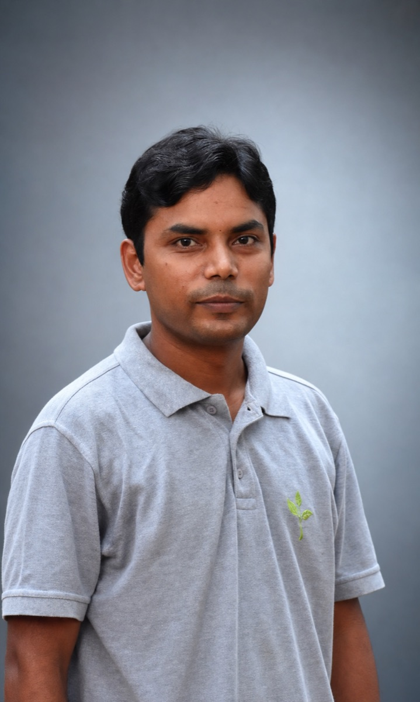

Computer architecture
Processor microarchitecture, cache hierarchy, emerging memory systems, performance, energy efficiency, and hardware security.
Learn more →Computer architecture researcher
I’m Newton, an Assistant Professor in the Department of Electrical & Electronics Engineering at BITS Pilani, K K Birla Goa Campus. My work spans computer architecture, embedded and edge systems, and hardware-accelerated data processing.
Assistant Professor · Since July 2026Electrical & Electronics Engineering · BITS Pilani, Goa

About
I am interested in how specialized hardware and memory-system design can improve the performance and energy efficiency of modern computing systems.
Before joining BITS Pilani, I worked as a Silicon SoC Architect at Intel, developing microarchitectural features for processor cache hierarchies. My doctoral work at IIT Bombay and the National University of Singapore focused on modern memory subsystems and processing-in-memory architectures.
Read more about my background →Research areas
My current interests connect processor design, embedded and edge systems, and efficient hardware acceleration.
Processor microarchitecture, cache hierarchy, emerging memory systems, performance, energy efficiency, and hardware security.
Learn more →Efficient computing platforms that bring dependable processing closer to where data is produced.
Learn more →Domain-specific and processing-in-memory architectures for graph analytics and other data-intensive workloads.
Learn more →Recent work
Selected recent work in graph prefetching, translation hierarchies, and cache management.
IEEE Computer Society Annual Symposium on VLSI
29th International Symposium on VLSI Design and Test
Design, Automation and Test in Europe Conference
Connect about research, teaching, and academic collaboration.